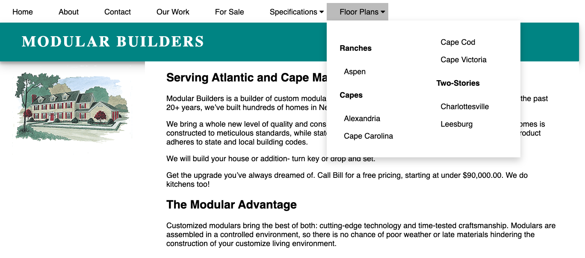
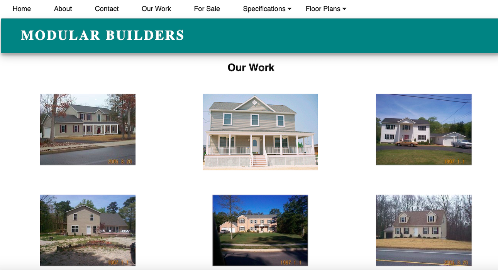

Modular Builders Website Design + Implementation
Check out the first draft here
The Task
My Dad, a small business owner, has been using the same website since the early 2000s. Once I began learning HTML and CSS, I asked him if he would like me to build a new site for him. He said yes, so I combed through his site for the most crucial information and drew up a new website map. I organized most of the content through dropdown navigation tools (specifications and floor plans) so that it was all easily accessible in one place.  I also collected his previous work on one page, using CSS grid.
Feedback
When I showed my Dad the first iteration of the website, he loved its clean appearance and easy navigation. However, he wanted to include more content, such as relevant deals and more information about his prior work. We are currently working on the second iteration.
Takeaways
This project helped me to feel more confident about my web programming abilities. I also realized the importance of communicating with who you are designing for at every step of the process, rather than making assumptions and needing to backtrack as a result.
